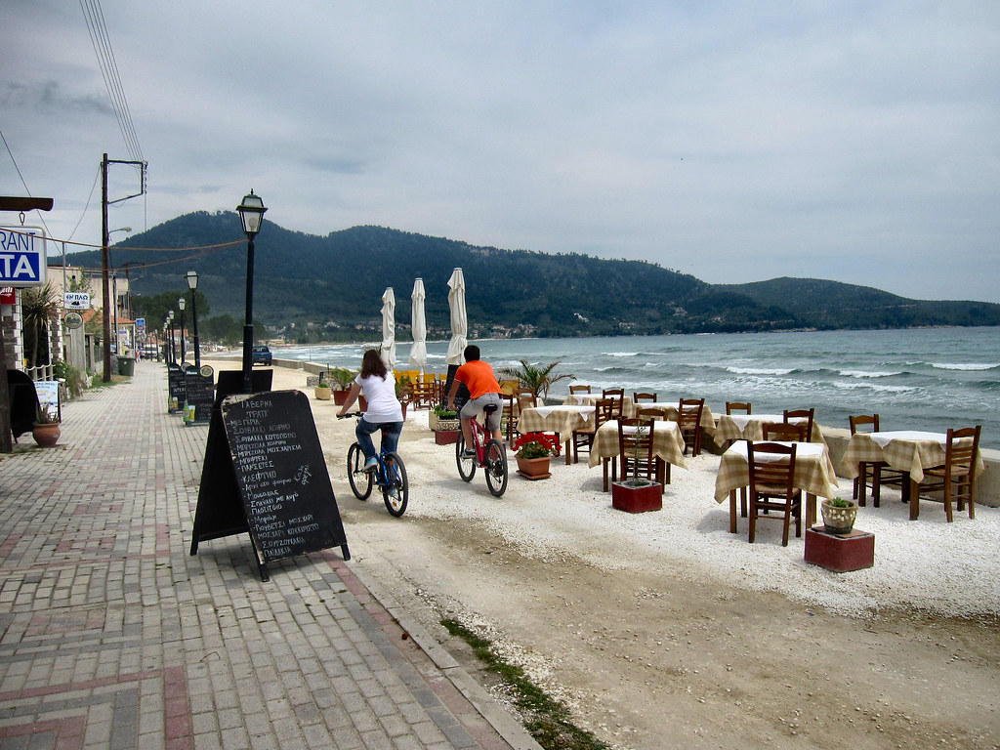

Qué está pasando realmente
En una taberna griega tradicional, avanzada la noche, con música de bouzouki sonando cada vez más fuerte y los comensales ya varias copas de vino adentro, alguien de pronto agarra un plato vacío de la mesa y lo estrella contra el suelo. El ruido rompe momentáneamente la conversación, pero en lugar de generar silencio incómodo, provoca justo lo contrario: aplausos, gritos de celebración, y a veces, un efecto contagioso donde varias personas más se suman al gesto, llenando el suelo del local de cerámica hecha pedazos entre risas y música cada vez más animada.
Esta costumbre, conocida en griego relacionada con el concepto de kefi —una palabra casi intraducible que combina alegría desbordante, euforia colectiva, espíritu festivo y una especie de entrega emocional total al momento presente—, tiene raíces que se remontan, según distintas interpretaciones históricas y antropológicas, a rituales antiguos de celebración, duelo y hospitalidad en la cultura griega y, más ampliamente, en la región mediterránea y del Cáucaso, donde prácticas similares de romper objetos como expresión emocional intensa han existido en distintas formas a lo largo de los siglos.
Una de las explicaciones más citadas conecta esta práctica con antiguos rituales relacionados con el luto y el más allá en la Grecia clásica, donde romper vasijas de cerámica formaba parte de ciertas ceremonias fúnebres como una forma simbólica de liberar el espíritu del difunto o de marcar una ruptura definitiva con lo que ya no volverá. Con el tiempo, y a través de un proceso cultural de resignificación bastante común en muchas tradiciones populares, ese mismo gesto de destrucción ritual se trasladó del contexto del duelo al de la celebración pura, convirtiéndose en una expresión física de alegría desbordante en lugar de tristeza.
En griego existe la palabra "kefi", casi intraducible, que describe ese estado de euforia colectiva y alegría desbordante que, tradicionalmente, se celebraba rompiendo platos.
De dónde viene todo esto
Otra explicación, más ligada a la práctica social directa, sugiere que romper un plato después de una comida especialmente disfrutada funcionaba históricamente como el máximo elogio posible hacia el anfitrión o la cocina de una taberna: un gesto que decía, sin necesidad de palabras, "esta comida y esta noche fueron tan buenas que merecen terminar con un pequeño acto de exceso festivo". En bodas, celebraciones familiares importantes y fiestas populares griegas, romper platos se convirtió así en una forma extrema, casi teatral, de expresar entusiasmo colectivo compartido entre todos los presentes.
Con el paso de las décadas, sin embargo, la costumbre de romper platos de cerámica real prácticamente desapareció de la vida cotidiana griega debido a razones bastante prácticas: el costo económico de reponer constantemente vajilla rota, los riesgos evidentes de seguridad por fragmentos de cerámica dispersos por el suelo de locales llenos de gente bailando, y regulaciones municipales en distintas ciudades que directamente prohibieron la práctica en espacios públicos por motivos de higiene y seguridad. La tradición, lejos de desaparecer del todo, se adaptó: muchas tabernas orientadas al turismo ofrecen hoy versiones especiales de platos de yeso barato, fabricados específicamente para romperse sin peligro ni gasto real significativo.
Más allá de lo básico
En paralelo, otras formas más seguras de expresar ese mismo espíritu de kefi ganaron popularidad como sustituto directo, especialmente lanzar flores, confeti o servilletas de papel al aire durante momentos culminantes de la fiesta, manteniendo viva la esencia teatral y colectiva del gesto original sin los riesgos ni costos asociados a la cerámica real. Para muchos griegos mayores, sin embargo, estas alternativas modernas, aunque prácticas, no logran replicar del todo la intensidad sonora y visual del plato genuino estrellándose contra el suelo, ese instante preciso donde el sonido del quiebre se funde con la música y los aplausos.
La exclamación "¡Opa!", gritada en el momento en que un plato se rompe o un bailarín salta, se ha convertido en una de las exportaciones culturales más reconocibles de Grecia, en gran parte gracias a los restaurantes de la diáspora griega en Estados Unidos, Australia y Europa que mantuvieron vivo el espíritu de romper platos —a veces literalmente, a veces con el sustituto más seguro de flores y servilletas— mucho después de que la práctica se desvaneciera en el día a día del propio país. Para mucha gente fuera de Grecia, "¡Opa!" es la palabra que más asocian con la cultura griega, completamente desconectada de su contexto ritual original.
Las variaciones regionales añaden más matices a la costumbre: en Creta, los disparos festivos a veces acompañan bodas y bautizos en zonas rurales en lugar de, o junto con, romper platos, mientras que en Chipre, un espíritu similar de celebración exuberante se conoce como glentia, con sus propias costumbres locales en torno a la música, el baile y la alegría comunitaria. En todo el mundo de habla griega, el ritual concreto cambia de isla en isla, pero el impulso de fondo —que la alegría verdadera exige una salida física y compartida— se mantiene notablemente constante.

Qué debes saber si viajas
Si quieres sumarte al espíritu de la celebración en Grecia, ten esto en cuenta:
- La mayoría de las tabernas modernas usan platos especiales de yeso para romper: pregunta antes de lanzar algo que parezca cerámica de verdad.
- Algunos locales cobran una pequeña tarifa por romper platos como parte del espectáculo: suele ser opcional y se ofrece con claridad.
- Lanzar pétalos de flores o servilletas es la alternativa moderna más segura y aceptada si quieres sumarte al espíritu del "kefi".
- Si asistes a una boda familiar real, sigue el ejemplo de los locales en lugar de asumir que romper platos está garantizado.
- Las bodas y los bautizos son hoy los lugares donde es más probable ver la tradición, más que en las tabernas cotidianas: ajusta tus expectativas en consecuencia.
- Si organizas tu propia celebración y quieres platos auténticos para romper, algunas tiendas especializadas todavía venden cerámica económica hecha específicamente para ese propósito.
El panorama completo
Al final, más allá de si el plato es real o de yeso, lo que esta costumbre revela es algo profundamente humano sobre la cultura griega: la convicción de que ciertos momentos de alegría son demasiado grandes para contenerse en silencio o comportamiento comedido, y merecen, en cambio, una expresión física, ruidosa y compartida que todos en la sala puedan sentir al mismo tiempo. El plato roto no es un descuido ni un exceso vergonzoso: es, en esencia, la alegría hecha sonido.
¿Tienes curiosidad por saber cómo culturas cercanas manejan reglas parecidas? No te pierdas nuestros artículos sobre El crimen de pedir un capuchino después de mediodía en Italia y El pez que tiene mil recetas y ninguna se repite en el mismo año.